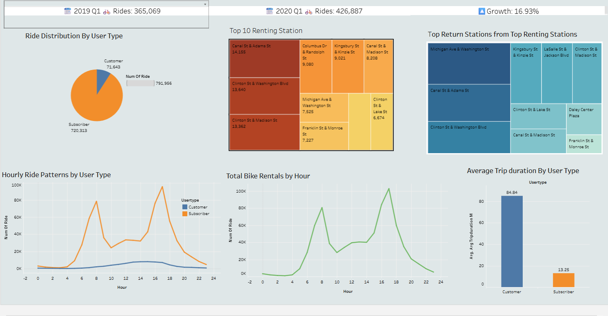

🚲 Bike Usage Analysis – SQL + Tableau
This case study compares Q1 2019 and Q1 2020 bike ride patterns using SQL and Tableau.
🔧 Overview
- Tools: BigQuery (SQL), Tableau
- Techniques: Grouping, subqueries, joins, temporal trends
- Data: CitiBike trip data (Q1 2019 vs Q1 2020)
🔍 Key Findings
- 🕐 Peak usage between 5–7pm on weekdays
- 📈 16.93% increase in total rides YoY
- 🧑💼 Subscribers dominate usage (91%)
📊 Tableau Dashboard

📥 Download SQL Logic
Download Case Study (PPTX)